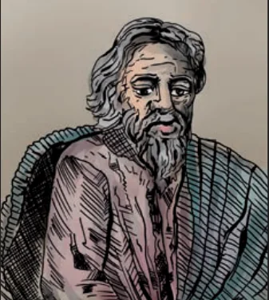
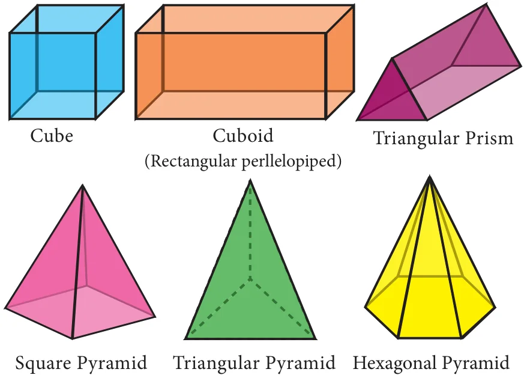

7 MENSURATION
“Nature is an infinite sphere of which the centre is everywhere and the circumference nowhere”. – Blaise Pascal

Pappus, born at Alexandria, Egypt is the last of the great Greek geometers. Pappus major work ‘Synagoge’ or ‘The Mathematical Collection’ is a collection of mathematical writings in eight books.
He described the principles of levers, pulleys, wedges, axles and screws. These concepts are widely applied in Physics and modern Engineering Science.
Learning Outcomes
- To determine the surface area and volume of cylinder, cone, sphere, hemisphere and frustum.
- To compute volume and surface area of combined solids.
- To solve problems involving conversion of solids from one shape to another with no change in volume.
7.1 Introduction
The ancient cultures throughout the world sought the idea of measurements for satisfying their daily needs. For example, they had to know how much area of crops needed to be grown in a given region; how much could a container hold? etc. These questions were very important for making decisions in agriculture and trade. They needed efficient and compact way of doing this. It is for this reason, mathematicians thought of applying geometry to real life situations to attain useful results. This was the reason for the origin of mensuration. Thus, mensuration can be thought as applied geometry.

We are already familiar with the areas of plane figures like square, rectangle, triangle, circle etc. These figures are called 2-dimensional shapes as they can be drawn in a plane. But most of the objects which we come across in our daily life cannot be represented in a plane. For example, tubes, water tanks, bricks, ice-cream cones, football etc. These objects are called solid shapes or 3-dimensional shapes.
We often see solids like cube, cuboid, prism and pyramid. For three dimensional objects measurements like surface area and volume exist.
In this chapter, we shall study about the surface area and volume of some of the standard solid shapes such as cylinder, cone, sphere, hemisphere and frustum.